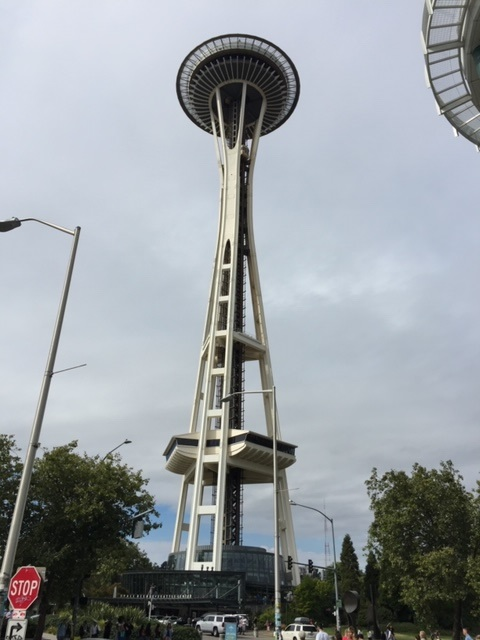
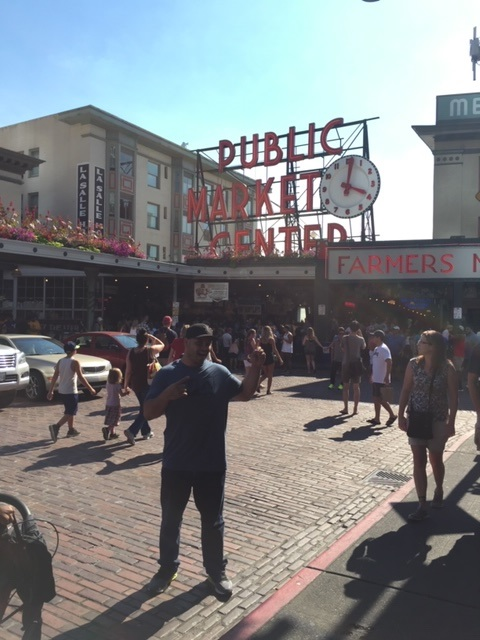
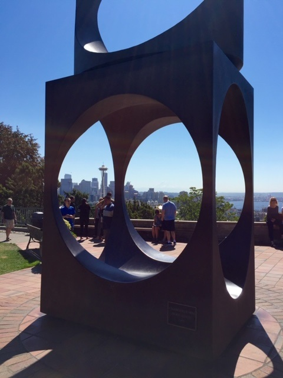

I happened to have two friends who moved to Seattle around the same time and knew this would be a perfect time to plan a vactation. They both didn't know each other and I thought it would be a great opporunity to have a free place to stay for free but also for both of them to meet. The trip was amazing and my two friends are now friends that take hiking and camping trips together all the time. I'm including on this page a few fantastic moments from my trip to Seattle, Washington.
One of my friend's happens to live within ten walking minutes from the Seattle Space needle. One of my our first adventures including walking to the Space Needle and visiting the small art museum in an adjacent building. There is a line and elevator that you can take up to the Space Needle but it was too long so we opted to just go into the museum. The great thing was that in this museum is a collection of amazing blown glass known as Chihuly Garden and Glass which listed on the top things to do in Seattle by Travel US. News.
The Chihuly Garden and Glass is a museum located in the Seattle Center showcasing the studio glass of Dale Chihuly. This is some amazing blown glass that you would never think could be created by one individual. A tourist will walk through the indoor musuem and also through the outdoor gardens that showcase a huge collection of bloswn glass by this uniqe artist. By looking at the one picture above one can't image the amount of work it must take to create such a monumental structure from blown glass.

Fun Fact: The first Starbucks was started in 1971 in downtown Seattle, Washington.
Pike Place Market is an booming farmer's market full of fresh seafood sold on ice, fresh fruits and vegetables. You'll find many tourists walking this buys street to take home some of their groceries for the week. You'll see this market on travel shows and cooking shows and it's bustling with tourists and merchants. The foods are reasonably priced and one can find almost any selection of food they're seeking. Seeing this buys street in person was all that I had expected!.

My trip to Seattle was an amazing trip where I got to rekindle old friendships and make new ones. I've always been told that the weather in Seattle is normally rainy and overcast for nine months out of the year but my trip was perfect weather. My trip to Seattle was full of amazing sites, great friends, and great food. I would recommend that anyone go to Seattle through the months of April through June.
Below I've listed a travel blog for Seattle and three attractions with links that offer more detailed information about each attraction to visit.
45 Fun Things to Do in Seattle
| Top Attractions in Seattle | Websites |
|---|---|
| Seattle Space Needle | Seattle Space Needle |
| Pike Place Market | Pike Place Market |
| Chihuly Garden and Glass | Chihuly Garden and Glass |
Posted by: Juan Vega
Contact information: Juan.Vega1080@Gmail.com.